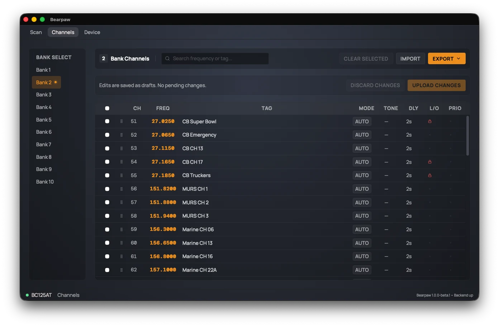

The Channels Tab
The Channels tab is where you manage your scanner's memory: rename channels, change frequencies, set tones, lock out the noisy frequencies, and reorder them. When you're done, you push your changes back to the radio.
Your edits don't reach the scanner until you press "Upload Changes." Everything you change here is held as a draft, a pending change stored in the app, until you upload it. Batching this way lets you make a set of changes and review them before they go to the scanner. (More on this below.)
Banks: the sidebar
Your 500 channels are organized into 10 banks of 50 channels each. Channels 1 to 50 are Bank 1, 51 to 100 are Bank 2, and so on. The left sidebar has a button for each bank.
Click a bank to see its 50 channels. Only one bank shows at a time; the app opens on Bank 1. The selected bank is highlighted with a small glowing dot, and its number appears next to the "Bank Channels" heading.
These sidebar buttons choose which channels you're looking at and editing. They're different from the bank buttons on the Scan tab, which turn banks on and off for scanning.
The channel list
Each row is one channel. The columns, left to right:
| Column | What it means |
|---|---|
| ☑ | A checkbox to select the row for a bulk action (see the toolbar). |
| ⠿ | A drag handle. Grab it to reorder the channel within its bank. |
| CH | The channel number (1 to 500). |
| FREQ | The frequency, in MHz (e.g. 146.8500). |
| TAG | The channel's name (its alpha tag), or a dash if unnamed. |
| MODE | The modulation: AUTO, FM, AM, or NFM. |
| TONE | The CTCSS tone in Hz, or a dash for none. |
| DLY | The delay in seconds before the scanner resumes after a transmission. |
| L/O | A red lock icon if the channel is locked out (skipped when scanning). |
| PRIO | A glowing dot if this is the bank's priority channel. |
To edit a channel, click anywhere on its row except the checkbox. That opens the edit panel. The checkbox in the header row selects (or clears) every channel currently shown.

Editing a channel
Clicking a row opens the Edit Channel panel. Every field:
Frequency (MHz) is a direct entry. The BC125AT doesn't
cover one continuous range; it covers four bands:
25 to 54, 108 to 174, 225 to 380, and 400 to 512 MHz.
Enter something outside those bands (say, 90.0 MHz) and the app rejects
it with a message. Enter 0 to mark the channel empty.
Alpha Tag is the channel's name, up to 16 characters.
Modulation is one of AUTO, FM, AM, or NFM (narrow FM). AUTO lets the scanner choose based on the frequency.
Tone Squelch (CTCSS Hz) sets a CTCSS tone so the scanner only opens on transmissions carrying that tone. Leave it blank for none. The app accepts only the standard CTCSS tones (67.0 to 254.1 Hz) and warns you on a value that isn't one of them.
Delay (seconds) is how long the scanner waits on a channel after a transmission ends before it resumes scanning, giving you time to hear a reply. Choose from -10, -5, 0, 1, 2, 3, 4, 5. The negative values are pre-delays: the scanner holds before the next transmission.
Lockout is a switch. On means the scanner skips this channel.
Priority is a switch, and it applies to the scanner immediately rather than waiting for Upload. The radio allows only one priority channel per bank, so turning it on where another channel already has priority asks you to confirm moving it. (More on priority in the Glossary.)
Drafts and uploading (the important part)
Between the toolbar and the channel list is a status strip that reads either "Edits are saved as drafts. No pending changes." or "…N pending.", next to two buttons: Discard Changes and Upload Changes.
- Edit one or more channels. Each saved edit becomes a draft. Rows with pending changes get a colored bar down their left edge, and the pending count ticks up.
- Review. Nothing has touched the radio yet. Edit more, or change your mind.
- Upload. Press Upload Changes. The app writes your drafts to the scanner, then re-reads the channels to confirm they took. The button reads "Uploading…" while it works.
To throw away all your pending edits without uploading, press Discard Changes (it asks you to confirm first).
The Priority switch is the exception. It applies the moment you toggle it. Everything else waits for Upload.
The toolbar
Across the top of the tab:
- Search box: filter the current bank by frequency or name. Drag-reorder is turned off while a search is active.
- Clear Selected: blanks all the checkbox-selected channels. Like edits, this creates drafts; it doesn't wipe them from the radio until you upload.
- Import / Export: move channels between the scanner and a file. Both work in two formats, CSV and native Uniden. See Import and export below.
- Drag to reorder: change the channel order within the bank by dragging. Reordering is a draft, and uploads with everything else.
To reorder a channel: point at the drag handle (⠿) at the left of the row then press and hold the mouse button and drag the row up or down. Release it where you want the channel to land. The move is saved as a draft (a colored bar appears on the affected rows) and goes to the radio on your next Upload Changes.
Two limits. Reordering is mouse-only — there's no keyboard path to it yet. And drag is turned off while a search is active, since the list you see is filtered rather than the full bank order; clear the search box to drag again.
Import and export
Your channels don't have to live only in the radio. Bearpaw reads and writes them to files, in two formats, so you can back them up, edit them at your desk, or hand them off to other software.
The two formats
CSV is a plain spreadsheet: one row per channel, with columns for frequency, tag, mode, tone, delay, and lockout. Open it in Excel, Numbers, or Google Sheets, make bulk edits, and load it back in.
Native Uniden (a .bc125at_ss file) is the
same format the official Sentinel software reads and writes. It's a full
snapshot: all 500 channels and the scanner's settings. Because
it speaks Sentinel's own language, you can move a channel set between
Bearpaw and Uniden's software in either direction, or keep one as a
complete backup of the radio. Exporting it takes a few seconds longer
than CSV.
Exporting
Export saves your channels to a file. Pick
CSV for just the channel list, or
BC125AT for the full backup. The app writes
channels.csv or scanner.bc125at_ss and lets
you choose where it goes.
Importing
Import loads channels from a file, and reads either
format automatically. A CSV brings in just the channels. A
.bc125at_ss file brings in everything it holds and
overwrites all channels and settings on the radio, so
the app asks you to confirm before it does.
Import writes straight to the scanner. Unlike a hand edit, it isn't held as a draft: the file's channels are written to the radio as the import runs, with a progress bar covering the screen while it works (a full native-file restore is around 80 seconds of writes). When it finishes, Bearpaw re-reads the channels so the list matches what's now in the radio.
Refreshing from the scanner (memory sync)
Your channels are read from the scanner when the app starts. This memory sync takes about 30 to 45 seconds, because the scanner hands over its 500 channels one at a time.
To re-read them manually, say after you changed something on the radio's own keypad, use Scanner → Sync Memory in the menu (or Ctrl/⌘ + Y). A panel covers the screen with a progress bar and blocks the UI until it's done.